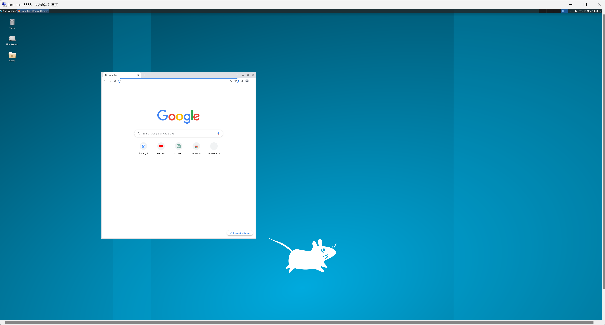

基于xcfe4和xrdp的WSL图形界面
基于xcfe4和xrdp的WSL图形界面
如果只要使用单个应用, 微软官方有教程, 直接照着做就好了.
更新本地软件数据库
1 | sudo apt-get update |
安装桌面 xfce4 和远程服务器 xrdp
1 | sudo apt install -y xfce4 xrdp |
如果有这个选项, 选择 lightdm 据说能有更好的体验.
有人说还要 sudo apt install xorg, 但是我不安装好像也没有问题, 好像自动也安装了.
解决和windows的端口冲突
xrdp 服务器默认使用 3389 端口, 会和本机Windows的远程桌面冲突, 这里可以改为 3390.
1 | sudo vim /etc/xrdp/xrdp.ini |
把 port = 3389 改成 port = 3390 (或者任意一个你喜欢且不冲突的端口).
注意, 如果
wsl2使用了虚拟交换机的桥接网络, 则虚拟机会有一套自己的ip地址, 使用这个ip在局域网内的其他电脑也是可以连接到虚拟机的. 但即便如此, 也尽量不要让端口冲突, 因为本机使用127.0.0.1时既可以连接宿主机又可以连接虚拟机.
指定桌面软件
1 | echo "xfce4-session" > ~/.xsession |
修改xfce4锁屏相关配置,不然可能出现自动锁屏后黑屏,也无法唤醒
1 | sudo vim /etc/X11/xrdp/xorg.conf |
在末端追加
1 | Section "ServerFlags" |
启动xrdp服务器
1 | sudo service xrdp start |
或者
1 | sudo /etc/init.d/xrdp start |
使用 windows 远程桌面连接
打开Windows远程连接,计算机处输入 localhost:3390 ,用户名和登录密码对应 wsl 的用户和密码.
登陆后就有了图形界面, 虽然卡卡的但是可以看了.
好像双击不能运行文件. . . . . .
本博客所有文章除特别声明外，均采用 CC BY-NC-SA 4.0 许可协议。转载请注明来自 H's Blog！